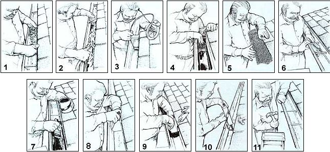

1. Remove any debris by hand (wear gloves). A short-bristle brush helps sweep the surface; mud and roof granules stuck to the bottom can be dislodged with a putty knife.
2. Starting at the highest point, wash the gutter with a garden hose, using the putty knife to remove stubborn debris.
3. If the downspout is plugged, use a plumber's snake (or a hooked, heavy wire) to dislodge the blockage.
4. Fasten a leaf strainer over the opening of the downspout, leaving about two inches protruding.
5. Place leaf guards over the gutters. Lift the edge of the first row of shingles slightly, pushing the guards under it. Stop when the guards are even with the lip of the gutter. (This step will save you future work.)
6. Use a putty knife and wire brush to remove debris and rust from the damaged area. Clean the surface of grit with a rag soaked in mineral spirits.
7. To repair light rust damage, apply a coat of black asphalt roof paint. Small holes should be covered with asphalt roof cement. Fiberglass resin, epoxy paste mix and silicone sealant can also be used to seal perforations.
8. Larger holes will require a sheet metal patch. Make a paper template that will follow the shape of the gutter and extend beyond the hole several inches to each side. Then trace the template onto a piece of roof flashing and use tin snips to cut the metal to the required size and shape.
9. Apply roof cement under and over the patch, crimping its edge over the gutter lip to secure it.
10. Seal leaks at the seams with asphalt roofing cement or silicone sealant. Use a putty knife to push the sealant under the gutter laps and to smooth the bead.
11. Loose gutter spikes should be relocated, since using the same hole will simply postpone the problem. Sagging gutter hangers will have to be loosened and the hangers renailed to the underside of the first row of shingles. Remember that the troughs must slope slightly toward the downspout ' Apply roofing cement to any shingles damaged by bending.
|
 ILLUSTRATIONS BY CLARENCE GOOSEN |
|
|